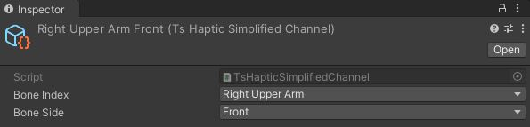
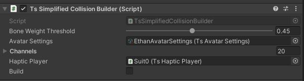
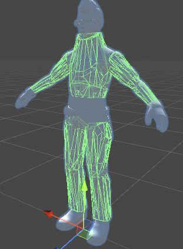
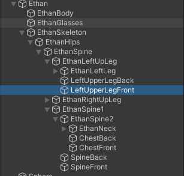
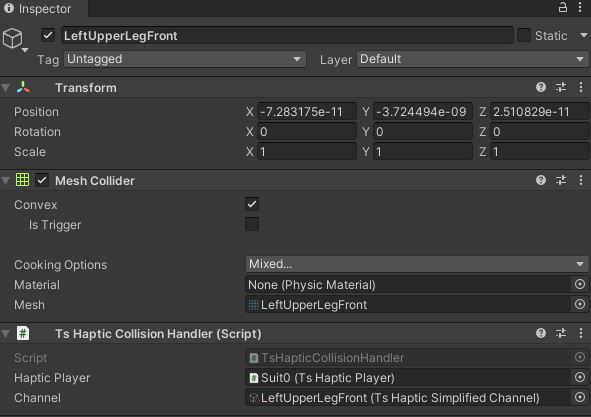
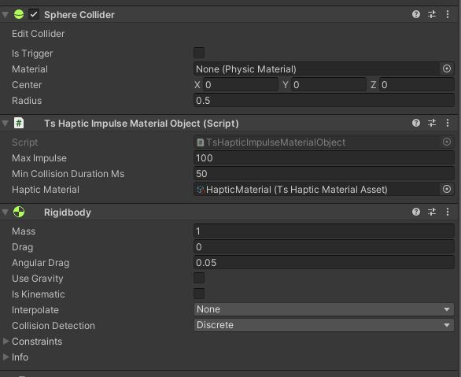

- Generated by
 1.9.4
1.9.4
|
Teslasuit.Unity
Teslasuit Unity Plugin
|
Haptic subsystem provides aggregated access to the haptic playback.
TsHapticPlayer component is used to provide device IHapticPlayer interface to other components when it's available. TsDeviceBehaviour component is required.
Teslasuit Unity plugin supports for import the following haptic assets (*.ts_asset extension):
All imported Teslasuit assets are derived from TsAssetBase. Once an asset has been imported, it can be accessed and loaded with TsAssetBase.Instance. An example of haptic animation asset playback can be found here: TS/Examples/Scenes/Haptic/HapticAnimationPlayback.unity
The atomic unit of the place where a haptic signal is played is a haptic channel. There are different versions of devices with different haptic channel mapping, so targeting a haptic to the same place on the body between the devices can be implemented with Simplified haptic channels. TsHapticSimplifiedChannel asset can be created by choosing the asset menu: Assets/Create/Teslasuit/Haptic/Simplified haptic channel. There are 2 properties determining from what body part the channels will be used for a haptic playback:

To use characters within a haptic feature, haptic channels must be mapped on the 3d model. TsSimplifiedCollisionBuilder is a editor component that can build collision by given simplified haptic channels. It should be added to the same GameObject where SkinnedMeshRenderer component is placed.

When collision building is done, Collider objects with TsHapticCollisionHandler component will be generated. It can look like this:
| Character | Hierarchy | Collision handler |
|---|---|---|
 |  |  |
An example of collison builder can be found here: TS/Examples/Scenes/Haptic/BoneChannels.unity After this actions, the character is configured to receive collisions events and generate haptic.
Haptic material is a kind of haptic asset that can be created inside Unity Editor. To create Haptic mateiral asset, choose the asset menu: Assets/Create/Teslasuit/Haptic/Haptic Material. Haptic material asset have the following properties:
Component that uses Haptic material to generate haptic depended on collision impulse called TsHapticImpulseMaterialObject. It should be added to the physical object that can generate collision events (have Rigidbody and Collider components). TsHapticImpulseMaterialObject have the following properties:
Max Impulse = 100, collsion with impulse = 50 will generate impact = 50 / 100 = 0.5.
An example of hatpic material setup can be found here: TS/Examples/Scenes/Haptic/BoneChannels.unity
Touch is an atomic playable item with constant haptic parameters that is addressed to the channel group. Touch can be created with TsHapticPlayer.CreateTouch with the following parameters:
An example of the touch playback can be found here:TS/Examples/Scenes/Haptic/PlayingTouches.unity
Haptic multipliers are used to get or control haptic output parameters multiplication coefficient. Master multipliers affects all playables playing in IHapticPlayer. Local multipliers can be used in IHapticPlayable context. Example for IHapticPlayer:
Example for IHapticPlayable: